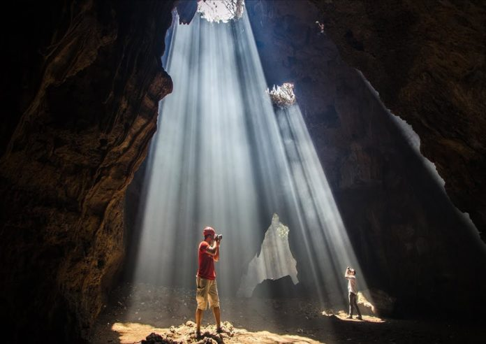

Goa Terawang Todanan Blora

Lokasi pertama yang menarik kamu kunjungi ketika berada di Blora adalah Goa Terawang Todanan Blora. Lokasi wisata ini menjadi salah satu wisata mewah yang ada di Blora. Sekaligus banyak menjadi incaran para wisatawan yang datang ke Blora. Wisata ini merupakan wisata alam yang menyuguhkan keindahan dan ketakjupan yang sangat cantik. Sehingga akan memanjakan para wisatawan yang datang. Goa yang konon dibentuk dari endapan bantuan gamping sekitar 10 tahun ini akan menjadikan perjalanan wisatamu akan sangat mengesankan. Di lokasi Goa Terawang Todanan ini juga terdapat beberapa goa lain yang tidak kalah menarik. Sehingga kamu akan lebih puas jika melakukan perjalanan wisata ke lokasi yang satu ini.